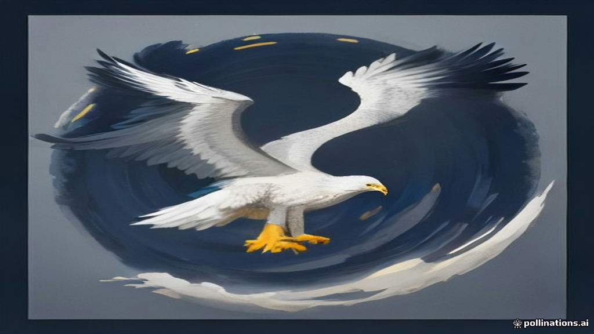

Market Wrap — 05 November 2026
TL;DR
- Indian markets likely navigated a mixed global sentiment, influenced by significant FII inflows.
- A sharp sell-off in US tech stocks and chipmakers, following US midterm election results, weighed on global sentiment.
- Specific standout gainers and losers for the Indian market are currently unavailable.
- Foreign Institutional Investors (FIIs) were strong net buyers, injecting ₹7,284 crore into the market.
- Domestic Institutional Investors (DIIs) were net sellers, pulling out ₹3,712 crore.
- Futures & Options (F&O) positioning data for today is unavailable.
How the market behaved today
Data for the Nifty 50 and Bank Nifty closes, along with their percentage changes and daily ranges, is unavailable. Similarly, the closing figures and ranges for the Nifty Midcap 100 and Nifty Smallcap 100 are not available, making it difficult to describe the precise shape of the day's trading session.
| Index | Close | Change | High | Low |
|---|---|---|---|---|
| Nifty 50 | data unavailable | data unavailable | data unavailable | data unavailable |
| Bank Nifty | data unavailable | data unavailable | data unavailable | data unavailable |
| Midcap 100 | data unavailable | data unavailable | data unavailable | data unavailable |
| Smallcap 100 | data unavailable | data unavailable | data unavailable | data unavailable |
India VIX data is unavailable, so a read on market volatility for today cannot be provided.
What moved the market — the factors
Today's market sentiment was largely shaped by a combination of global cues and significant institutional flows. On the global front, US markets experienced a sharp downturn, particularly in the technology sector, following the Democrats' sweep in the midterms. The Nasdaq Composite tumbled over 3%, with chipmakers like Qualcomm, AMD, and Arm plunging significantly due to disappointing smartphone chip sales and concerns over potential restrictions on AI data centres. This broader sell-off in US tech stocks likely created a cautious environment for global equities, including India.
Adding to global concerns, October saw a substantial withdrawal of $33.8 billion by foreign investors from emerging markets, with equities bearing the brunt of these outflows. However, counteracting some of these global headwinds, Foreign Institutional Investors (FIIs) showed strong buying interest in the Indian market today, recording net inflows of ₹7,284 crore. This significant buying by FIIs, coupled with Domestic Institutional Investors (DIIs) being net sellers at ₹-3,712 crore, indicates a divergence in institutional sentiment.
Domestically, a few Q2 earnings announcements also captured attention. Companies like Paras Healthcare and Signature Global reported impressive profit turnarounds or significant profit increases, while others like Godfrey Phillips and Glenmark Pharmaceuticals saw profit declines. Additionally, the Securities and Exchange Board of India (SEBI) revised currency derivative norms, allowing domestic and foreign portfolio investors to trade up to USD 5 million without establishing underlying exposure, a move that could impact currency market activity. The Federal Reserve's stance on gradual rate hikes to combat inflation also remained a key global economic factor.
Sectors — winners and losers
Data for the top 3 gainer sectors and top 3 loser sectors is unavailable.
Stocks that moved the market
Top 5 gainers (Nifty 500)
Data for the top 5 Nifty 500 gainers is unavailable.
Top 5 losers (Nifty 500)
Data for the top 5 Nifty 500 losers is unavailable.
News that moved stocks
- Paras Healthcare posts Rs 40 crore Q2 net profit in first results after listing
- Godfrey Phillips Q2 profit down 37% to Rs 190 cr; revenue up twofold at Rs 4,198 cr
- Signature Global clocks Rs 67 cr profit in Q2 vs loss yr ago, revenue rises over 2-fold
- Glenmark Pharma Q2 Results: Net profit plunges 56% to Rs 264 crore, revenue down at Rs 4,247 cr
- Sebi revises currency derivative norms for domestic investors, FPIs; allows to trade up to USD 5 mn
- US stock market crash: Chip stocks extend sell-off, AMD, Arm, Qualcomm and Sandisk plunge up to 17%; Nasdaq down 6%
Paras Healthcare reported a significant increase in Q2 net profit to ₹40.35 crore, up from ₹12.38 crore last year, marking a strong performance in its first results post-listing. This positive earnings report could influence investor sentiment towards the healthcare sector.
Godfrey Phillips India Ltd saw a 37.73% decrease in Q2 net profit to ₹190 crore, mainly due to a substantial tax increase, even as revenue doubled to ₹4,198 crore. This mixed earnings report could lead to cautious investor reaction for the stock.
Signature Global Ltd reported a consolidated net profit of ₹66.90 crore for the September quarter, a significant turnaround from a loss of ₹46.86 crore last year, with total revenue more than doubling. This strong performance indicates a positive trend for the real estate developer.
Glenmark Pharmaceuticals experienced a sharp 56.78% drop in consolidated profit after tax to ₹264 crore in the September quarter, with total revenue from operations also decreasing. This significant decline in profitability could negatively impact investor perception of the pharmaceutical company.
Sebi has updated regulations, permitting domestic and foreign portfolio investors to take positions in currency derivatives up to USD 5 million without needing to establish underlying exposure. This regulatory change could increase participation and liquidity in the currency derivatives market.
A sharp sell-off hit chipmakers in the US, with Qualcomm and Arm's disappointing forecasts exacerbating worries about potential restrictions on AI data centres. AMD, Sandisk, and Micron also fell heavily, contributing to a significant decline in the Nasdaq. This global tech sector weakness is a key factor for market sentiment.
F&O build-up — where traders are positioning
OI build-up needs the previous session's OI — it will populate from the next run.
Market breadth
The market breadth data for today is unavailable, with 0 advances and 0 declines reported out of 0 total traded stocks. This makes it difficult to assess the underlying participation across the broader market.
FII / DII flows
Foreign Institutional Investors (FIIs) continued their strong buying spree today, injecting a substantial ₹7,284 crore into the Indian equity market. In contrast, Domestic Institutional Investors (DIIs) were net sellers, pulling out ₹3,712 crore.
| Investor Type | Net Flow (₹ crore) |
|---|---|
| FII | 7,284 |
| DII | -3,712 |
Looking at the 5-day history, FIIs have been consistent net buyers for the last four sessions, with today's inflow being the highest in this period. Their net buying totals ₹20,835 crore over the last four trading days. Conversely, DIIs have been net sellers for the past four sessions, indicating a clear divergence in institutional activity. This sustained FII buying suggests strong foreign investor confidence or allocation towards Indian equities, potentially providing a floor to the market despite global uncertainties.
Event breakdown — what happened today and how it hit the market
Today's session was primarily driven by a confluence of global cues and significant institutional flows. The major event impacting global sentiment was the sharp sell-off in US technology stocks and chipmakers, following the US midterm election results and disappointing earnings/guidance from key tech players like Qualcomm. This led to a significant tumble in the Nasdaq, raising concerns about regulatory scrutiny and the health of the global tech sector.
Adding to the global picture, foreign investors withdrew a substantial $33.8 billion from emerging markets in October, with equities being the most affected. The Federal Reserve's continued stance on gradual rate hikes to achieve its 2% inflation target also kept global monetary policy in focus.
Domestically, the market reacted to a series of Q2 earnings reports from individual companies. Positive results from Paras Healthcare and Signature Global, showing significant profit growth or turnarounds, likely provided some stock-specific buoyancy. Conversely, profit declines reported by Godfrey Phillips and Glenmark Pharmaceuticals could have led to selling pressure in those counters. The revision of currency derivative norms by Sebi, allowing greater participation from domestic and foreign investors, was a notable regulatory development that could impact the currency market.
Overall, while global headwinds from the US tech sell-off and emerging market outflows were prominent, the strong and consistent buying by FIIs in the Indian market acted as a significant counter-balancing force.
Setup for tomorrow
Looking ahead, global cues will continue to play a crucial role. The sell-off in US tech stocks and chipmakers, with the Nasdaq down over 3%, will likely set a cautious tone for Asian markets tomorrow. Investors will be watching for any further developments in US markets overnight. On the commodities front, Brent Crude closed higher at $97.76, up +3.32%, and WTI Crude also gained +2.86% to $90.64, indicating potential inflationary pressures. Gold and Silver also saw gains, while the US 10-Year Yield dipped slightly to 4.83%. The USD/INR closed at 94.46, down -0.30%. The sustained FII buying trend will be a key factor to monitor, as will any further Q2 earnings announcements.
Sources
- https://economictimes.indiatimes.com/markets/stocks/earnings/paras-healthcare-posts-rs-40-crore-q2-net-profit-in-first-results-after-listing/articleshow/135580435.cms
- https://economictimes.indiatimes.com/markets/stocks/earnings/godfrey-phillips-q2-profit-down-37-to-rs-190-cr-revenue-up-twofold-at-rs-4198-cr/articleshow/135578939.cms
- https://economictimes.indiatimes.com/markets/us-stocks/news/apple-seeks-about-7-billion-from-bond-sale-bloomberg-news-reports/articleshow/135578897.cms
- https://economictimes.indiatimes.com/markets/us-stocks/news/qualcomm-shares-9-slump-as-weak-smartphone-chip-sales-overshadow-data-center-momentum/articleshow/135578695.cms
- https://economictimes.indiatimes.com/markets/us-stocks/wall-street-guide/emerging-market-outflows-hit-33-8-billion-us-midterms-offer-some-relief/articleshow/135578199.cms
- https://economictimes.indiatimes.com/markets/us-stocks/wall-street-guide/us-stocks-today-nasdaq-falls-at-open-after-midterms-fueled-surge-as-chip-data-center-stocks-fall/articleshow/135577537.cms
- https://economictimes.indiatimes.com/markets/digital-real-estate/realty-news/signature-global-clocks-rs-67-cr-profit-in-q2-vs-loss-yr-ago-revenue-rises-over-2-fold/articleshow/135577590.cms
- https://economictimes.indiatimes.com/markets/stocks/earnings/glenmark-pharma-q2-results-net-profit-plunges-56-to-rs-264-crore-revenue-down-at-rs-4247-cr/articleshow/135577516.cms
- https://economictimes.indiatimes.com/markets/bonds/gold-silver-stocks-why-bonds-deserve-a-place-on-your-dhanteras-shopping-list/articleshow/135576862.cms
- https://economictimes.indiatimes.com/markets/stocks/news/sebi-revises-currency-derivative-norms-for-domestic-investors-fpis-allows-to-trade-up-to-usd-5-mn/articleshow/135576552.cms
- https://economictimes.indiatimes.com/markets/us-stocks/news/feds-beth-hammack-favors-gradual-rate-hike-path-to-lower-inflation/articleshow/135576467.cms
- https://www.livemint.com/market/stock-market-news/us-stock-market-crash-chip-stocks-extend-sell-off-amd-arm-qualcomm-and-sandisk-plunge-up-to-17-nasdaq-down-6-11793900308301.html
- Official sources (NSE / RBI / SEBI) - Data unavailable for direct links, but news articles reference these bodies.